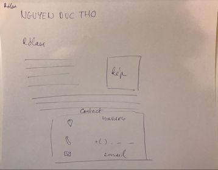
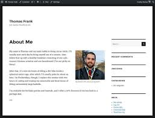
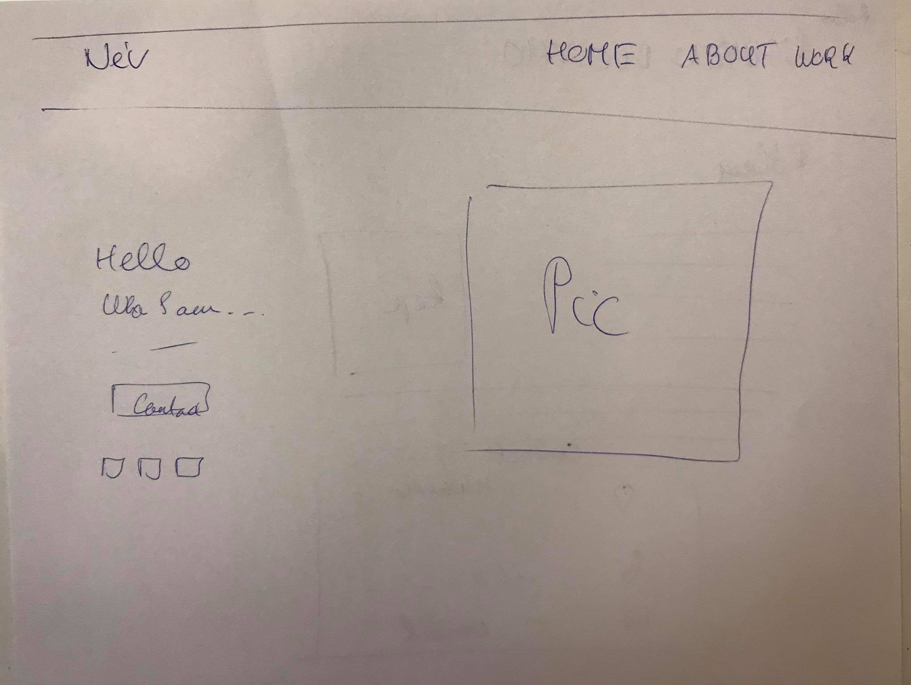

Célok
- Portfólió oldal készítés: saját adatok, képek, navigáció, munkáim.
- Legyen minél igényesebb, hogy később is használhassam.
- Az oldalak között lehet lépegetni.
- Legyen responsive (ez nem sikerült).
Terv
- Utána nézni: mi az a portfolio, milyen portfolio oldalak vannak.
- Hogy kell weblapot szerkeszteni: youtube 7 órás html és css alapok.
- Más youtube videók: Web Dev Simplified
- Sok-sok gyakorlás.
- Egy-egy kiválasztott oldal "lemásolása"
- Feladat megoldása
- Feltöltés
Nehézség, kihívás
- Megtanulni a HTML és CSS
- Rengeteg anyag van, melyikből tanuljak?
- Ezt gyakorolni kell, nézni nem elég...
- Mindig elfelejtem a parancsokat.
- Van egy jó elképzelésem, de nem tudom megoldani.
Hasznos, jó, motiváció
- Hasznos tudás
- Érdekes
- Jó szabadidős tevékenység, el lehet vele lenni órákig.
- Sok anyag, w3school, tutorialspoint, youtube, udemy
Blog terv
Ötlet:
Akartam mindig egy blogot csináni, így jött az ötlet egy blog-portfólió keverékre.
Hogy a blog cikkeket magát megírjam, lehet, hogy nem lesz időm. De legalább a cikkek fedőlapjából látszanak a munkáim és hogy mivel foglalkozok.
Ez szép és átlátható
Jövőbeni fejlesztés lehet, hogy lehetne kategorizálni a cikkeket.
Terv:

A design részben linkelt oldal alapján csináltam meg a látvány tervet. Ez viszonylag egyszerű, a dobozokat, pedig a HTML és Css alapok videó segítségével csináltam.
Design:
design tervNehézségek:
Annyira nem lett szép a bevezető rész, nem elég kreatív, de egyszerű és megvalósítható a tudásommal.
Rólam
Ötlet:
Valamilyen egyszerű, pár mondat magamról, talán (képesítés, tudás,iskolák) kapcsolat megadása, ikonok esetleg valamilyen CV típusú rész
Terv(ami végül kicsit más lett):
Design:
A google beírtam, hogy "about me website" és a képek között ezt kiválasztottam alapnak. Eredetileg ilyenre akartam végül csak a fejléce lett hasonló. Végül a következő videó elején bemutatott weboldal alja lett a weblapon alapja: youtube videó
Kezdő oldal terv
Terv:
Cél: minél egyszerűbb, de azért igényes kezdő oldal létrehozása, amely navigációs listával rendelkezik, tartalmaz képet és egy rövid ismertetőt.
egyszerűség: rengeteg ilyen oldal van a neten, így könnyű alapot találni hozzá. Google-be következőt írtam: "landing page"
Design:
Youtube videó megnéztemNehézségek:
Nem tudtam annyira jól egymás mellé helyezni a dobozokat, a grid és flexbox témakört annyira nem értem, a legegyszerűbben helyeztem el egymás mellé a két grid-et Rengeteg szép weboldal van a neten, inkább annak megvalósítása a nehéz.